Squire
Squire turns a child’s chores into a game they want to play — while every point and reward stays firmly under a parent’s control.
Quests, streaks, achievements, and a reward store make routine responsibility feel like progression. The child can act freely (and offline) from their phone, but only the parent’s computer can ever move the balance. It’s trustworthy by construction: the child role can read and propose, never commit.
Squire is self-hosted. It runs on a computer in your home — there’s no Squire cloud holding your family’s data, and no subscription. The phones talk to that home server over your LAN.
The pieces
| Piece | Who | What it is |
|---|---|---|
| The Keep | Parent / admin | A web admin app on the home computer. The single source of truth and the only writer. Author quests, rewards, and achievements; review the queue. |
| The Squire | Child / player | The phone app in player mode. See today’s quests, balance, streaks, and rewards; submit “I did it” and “I want that”. Works offline. |
| The Knight | Parent / quick-admin | The same phone app in parent mode. Approve or reject from anywhere, mark a quest done, redeem a reward, add funds. |
The two phone roles are one Android app — which role you get is decided when the phone is paired.
Where to start
- A parent setting up Squire for your kids? Start with Set up Squire for your family.
- Running the home server yourself? Start with Stand up a home server.
- Want to understand the design? Read How Squire works.
This site is organized by Diátaxis: Tutorials get you from zero to working, How-to guides solve one task, Reference is the lookup material, and Explanation covers the why.
Set up Squire for your family
This tutorial takes you from nothing to a working household: the home server running, the Keep open, your kids’ phones paired, and a first chore that pays out a reward. Allow about 20 minutes.
Before you start you need the home server running on a computer in your house. If that’s not done yet, follow Stand up a home server first (or hand this section to whoever runs it), then come back here.
1. Open the Keep
On the home computer, open the Keep — the parent admin app — in a browser at
http://localhost:4920. On first run it asks you to create the first admin (a Knight). Pick a
name and a secret you’ll remember; this is the parent login.
2. Add your household members
Go to the Members tab and add each person:
- a Knight for each parent who’ll review and approve,
- a Squire for each child who’ll play.
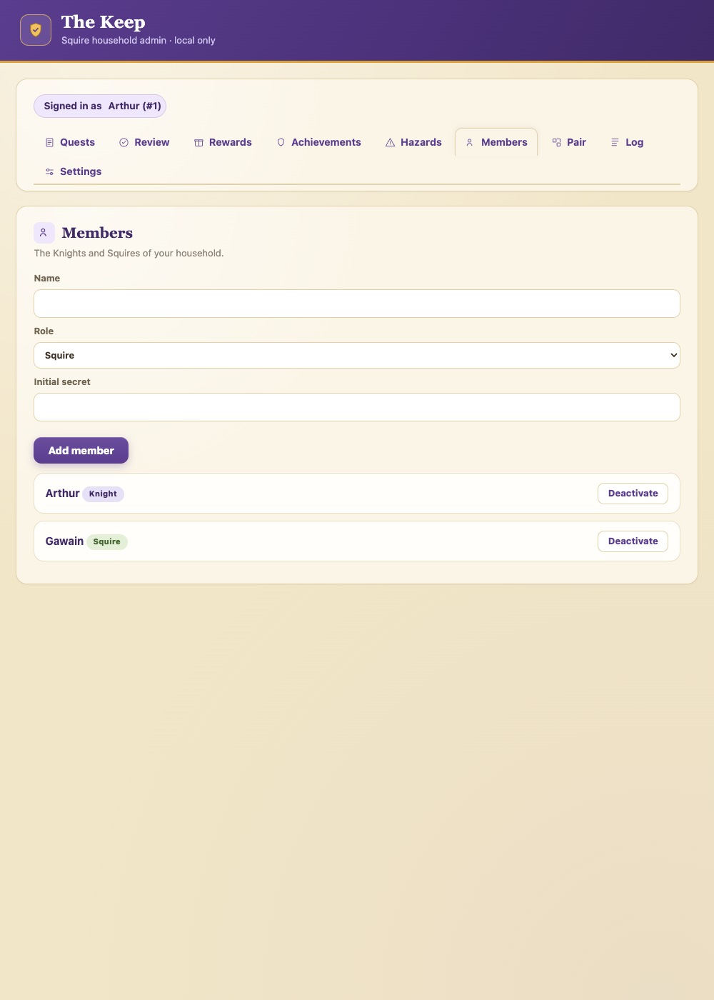
3. Create a first chore
Open the Quests tab and create a quest — say “Make your bed”, daily, worth a few coins, assigned to your child. (Full options are covered in Create chores & rewards.)
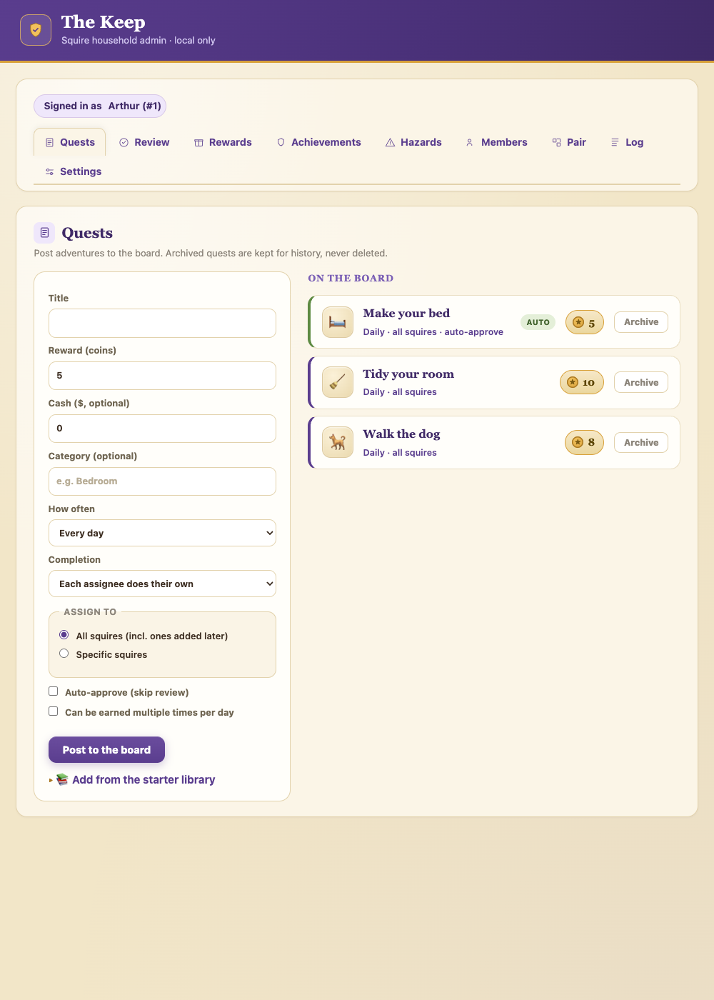
Add at least one reward in the Rewards tab too, so there’s something to spend coins on.
4. Pair the kids’ phones
Each phone pairs once. Briefly: in the Keep’s Pair tab, mint a code and show its QR; on the phone, install the app and scan it. The full walkthrough is Install the app → Pair a phone.
Pair a child’s phone as a Squire and a parent’s phone as a Knight.
5. Play one full loop
-
On the child’s phone (the Squire), tap the quest and submit “I did it”.
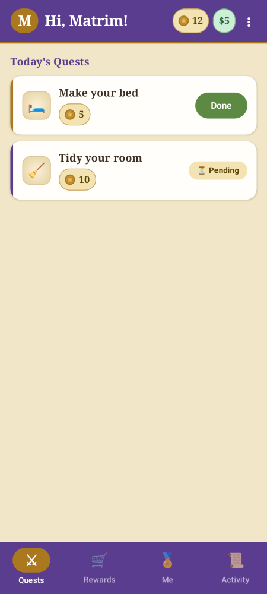
-
On a parent’s phone (the Knight) — or in the Keep — the claim appears in the review queue. Approve it.
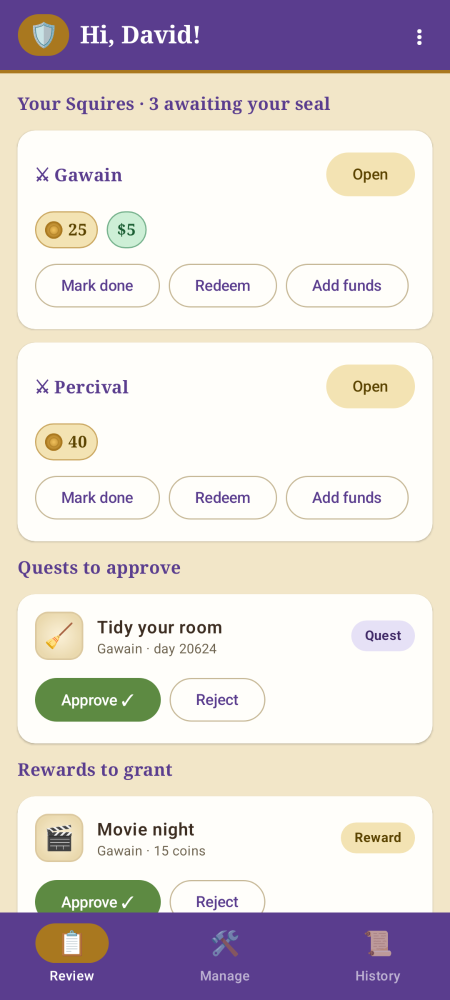
-
The child’s balance goes up. They can now spend it in the reward store.
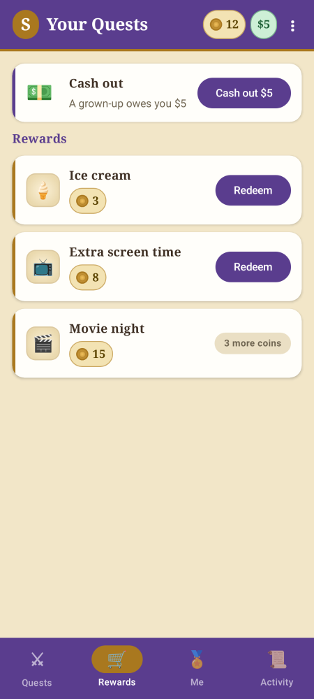
That’s the whole rhythm of Squire: the child proposes, the parent approves, the balance moves. From here:
- Add more quests, rewards, and achievements — Create chores & rewards.
- Let kids trade real money out — Cash out a balance.
- Understand why only the parent can move points — How Squire works.
Stand up a home server
This tutorial gets the Squire home server running on a computer in your house, so the phones on your LAN can reach it. Allow about 15 minutes. When you’re done, hand off to Set up Squire for your family to add members and chores.
What you’re installing
The home server (squire-serve) is a single Rust binary. It:
- serves the Keep (parent admin web UI) and the Local API the phones talk to,
- keeps all household data in a durable folder on this machine — nothing leaves your network,
- advertises itself on the LAN (mDNS) so phones can discover it,
- pulls the latest phone app and updates itself in the background (see Delivery & updates).
1. Install
On the home computer (macOS or Linux), run the one-line installer:
curl -fsSL https://raw.githubusercontent.com/colliery-io/squire/main/install.sh | sh
This downloads the latest signed squire-serve for your machine into ~/.local/bin. What happens
next depends on your OS:
- macOS — the installer also sets the server up as a background service (a
launchdLaunchAgent,io.colliery.squire) that starts on login, auto-restarts if it ever exits, and survives reboots. The home server starts running immediately — you don’t launch it by hand. It also creates a double-clickableSquire.appin~/Applications, which is simply a shortcut that opens the Keep (the background service is what keeps the server running). Skip the service withSQUIRE_NO_SERVICE=1. - Linux — you get the binary only. Start it with
squire-serve, and set up your own service to keep it running — see Run the home server.
(Prefer to run from source instead? See Run the home server.)
2. Open the Keep & create your admin
On macOS the server is already up. Open Squire.app (or just visit http://localhost:4920).
On Linux, run squire-serve first, then open that URL.
A fresh install has no admin yet. The Keep greets you with a “First run? Create the admin Knight” form — fill it in to create your parent login. (That’s the normal path; you don’t pass admin credentials on the command line.)
3. You’re ready
Logged into the Keep, you can now add members and create chores. The server keeps running in the background (macOS) or under whatever service you set up (Linux), so phones can sync whenever they’re on the network.
Next steps
- Use it from outside the house (a parent’s phone on cellular): Expose it over the internet.
- Protect the data: Back up & restore.
- Tune it: Server configuration.
Install the app
Squire’s phone app is a single Android app. The same app becomes a child’s player (the Squire) or a parent’s quick-admin (the Knight) depending on how it’s paired.
iPhone? The phone app is Android-only today. Parents can still do everything from the Keep in a browser.
Get the APK
The app isn’t on the Play Store — your home server distributes it over your LAN, always matching the server version.
-
Make sure the home server is running and the phone is on the same Wi‑Fi.
-
In the Keep, open the Pair tab. It shows a QR code that links to the app download on your LAN.
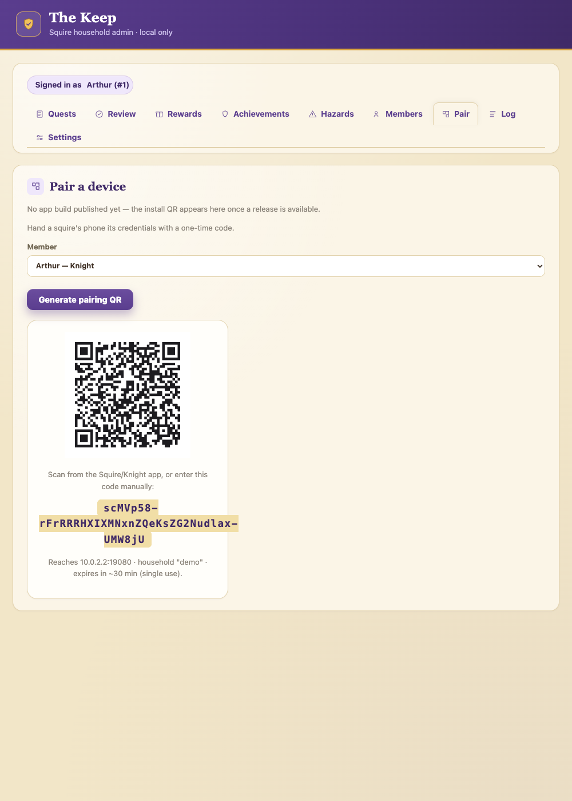
-
On the phone, scan that QR (or browse to the URL it encodes) and download the APK.
Install it
- Tap the downloaded
squire-<n>.apk. - Android will ask permission to install apps from this source the first time — allow it for your browser/files app, then continue.
- Open Squire once it installs. It will ask to be paired — keep that screen up and continue to Pair a phone.
Updates
You don’t reinstall to update. The server hands out new versions over the LAN and the app updates itself in place — see Delivery & updates.
Pair a phone
Pairing links a phone to a specific household member and gives it that member’s role. A child’s phone paired to a Squire account becomes the Squire (player); a parent’s phone paired to a Knight account becomes the Knight (quick-admin). The role and its permissions come from the account, not the app — the child app never holds a parent credential.
You only pair once per phone.
Steps
-
Install the app first if you haven’t — Install the app.
-
In the Keep, open the Pair tab and choose the member this phone belongs to. Mint a one-time pairing code; the Keep shows it as a QR code (and as text).
-
On the phone, open Squire and tap Scan to pair. Point it at the QR.
-
The phone discovers the home server on the LAN, redeems the code, and stores its own secure token. Done — it opens straight into the right role.
Good to know
- Pairing codes are one-time and short-lived. If a code expires before you scan it, just mint a new one.
- Re-pairing a phone (new device, or wiped app) is the same flow — mint a fresh code.
- Same Wi‑Fi required for pairing, because the phone finds the server over the LAN. To use a phone away from home afterward, set up internet access.
Troubleshooting
| Symptom | Fix |
|---|---|
| Phone can’t find the server | Confirm both devices are on the same Wi‑Fi and the server is running. mDNS must not be disabled (SQUIRE_MDNS is on by default — see configuration). |
| “Code invalid or expired” | Mint a new code in the Pair tab and scan promptly. |
| Wrong role after pairing | You paired to the wrong account. Re-pair using a code minted for the correct member. |
Create chores & rewards
Authoring is keyboard-first and lives in the Keep. This guide covers the three things you’ll create most: quests (chores), rewards, and achievements. Parents can also do quick authoring from the Knight app.
Quests (chores)
A quest is a chore that pays out when completed and approved.
In the Keep’s Quests tab, create a quest with:
- Title — what to do (“Make your bed”).
- Assignee — which Squire(s) it’s for.
- Cadence — one-off, Daily, Weekly (pick the days), or Every N days.
- Reward — what completing it pays: coins, real dollars, or both (Squire supports multiple currencies).
- Auto-approve — on for trivial chores (the point lands without review); off to route it through the review queue.
Editing is safe for history. Reward values are snapshotted when a completion is approved, so changing a quest’s payout later never rewrites points already earned. Archiving a quest hides it going forward without deleting its history.
From the phone, a parent can author quests in the Knight app’s Manage screen:
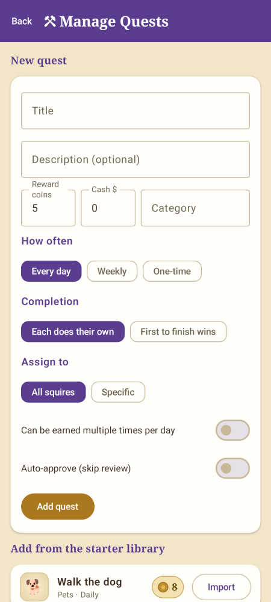
Starter library
Don’t author from scratch — the Quests tab has a starter library you can one-tap import and then tweak.
Rewards
A reward is something a child spends their balance on. In the Rewards tab set:
- Name and cost (in coins and/or dollars),
- Availability — Once or Repeatable,
- an optional achievement gate so a reward only unlocks after an achievement is earned.
Points are only checked at the moment of redemption — nothing is reserved while a request is pending.
Achievements
Achievements reward consistency rather than a single chore: streaks (e.g. 7 days in a row), totals, or point milestones. Earning one is sticky, can award bonus points, and can unlock gated rewards. Create them in the Keep’s Achievements tab.
Hazards
Squire also supports hazards — negative behaviors that deduct coins or progress — for when you want consequences as well as rewards. Configure them alongside your quests in the Keep.
See also
- Cash out a balance — turning a dollar balance into real money.
- How Squire works — why the child can never self-approve.
Cash out a balance
Squire tracks two kinds of balance: coins (an in-app score) and dollars (real money you’ve promised to pay). Cashing out is how a dollar balance becomes actual money handed to the child — recorded so the ledger stays honest.
How a child requests a cash-out
Cash-out is just a redemption, like any other reward. On the child’s phone (the Squire), open the rewards/profile screen, choose Cash out, and submit the amount.
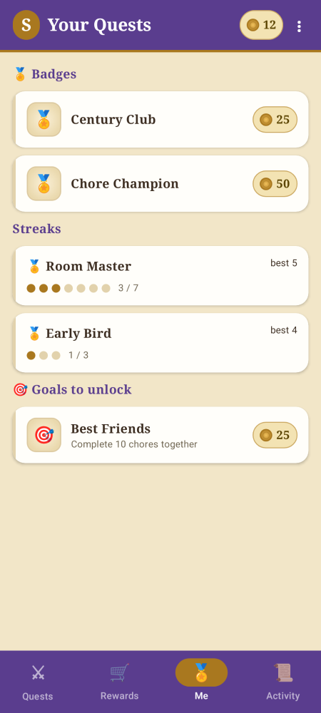
The request lands in the parent review queue. Nothing is deducted yet — the dollars are only moved when a parent approves.
How a parent settles it
From the Knight app or the Keep’s Review tab, approve the cash-out request. On approval:
- the child’s dollar balance goes down by that amount,
- the event is written to the ledger (so the history explains the balance),
- you hand over the real money.
Adding or correcting funds
Parents can also move a balance directly:
-
Add funds — grant coins or dollars (for example, a one-off bonus).
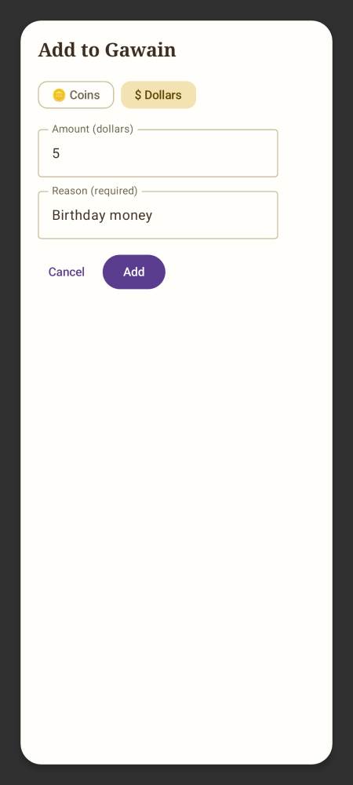
-
Adjust — a manual correction in either direction. Adjustments require a reason, which is recorded in the log.
Why it’s tracked this way
Every move — earn, spend, cash-out, adjustment — is an event in an append-only log. The balance is derived from that log, never edited in place, so any number on screen can be explained by replaying its history. See How Squire works.
Run the home server
This guide covers running squire-serve for real: from source, with the right environment, and as
an always-on background service. For first-time install use the
home-server tutorial; for every knob see
Server configuration.
Run it
From the installed binary:
squire-serve
From source (a checkout of squire-core):
angreal serve # debug
angreal serve --release # what production uses
On macOS the installer already runs the server as a background service (see the tutorial). Running
squire-serveby hand as well will collide on the ports — stop the service first (launchctl bootout gui/$(id -u) ~/Library/LaunchAgents/io.colliery.squire.plist) if you want to run it in the foreground.
It listens on API_PORT (default 8080) for the phones and KEEP_PORT (default 4920)
for the Keep, and stores data under SQUIRE_DATA_DIR (an OS data dir by default). See the
configuration reference for the full list.
A fresh household has no admin until you create one in the Keep’s first-run form (you don’t set it on the command line). If you ever need to inject one, see Add an admin to a running household below.
Stop it
angreal stop # frees the default ports
angreal stop --ports 8080,4920
Run it always-on
You want the server to start at boot and restart if it exits — otherwise the phones can’t sync while the computer is logged out or asleep.
-
macOS — already done for you. The installer registers a
launchdLaunchAgent (io.colliery.squire) that runs the server in the background on login, auto-restarts it within ~10s if it exits, and survives reboots. Manage it with:launchctl kickstart -k gui/$(id -u)/io.colliery.squire # restart launchctl bootout gui/$(id -u) ~/Library/LaunchAgents/io.colliery.squire.plist # stop/removeLogs go to
~/Library/Logs/squire-serve.log. -
Linux — set this up yourself with a
systemduser (or system) service: pointExecStartat~/.local/bin/squire-serve, setRestart=on-failure, and put anySQUIRE_*overrides in the unit’s environment.
Add an admin to a running household
If you ever get locked out, the escape hatch inserts a Knight admin directly (run with the server stopped):
angreal add-admin --name "Dad" --secret "a-secret"
Next
- Expose it over the internet so phones work away from home.
- Back up & restore.
Expose it over the internet
By default the home server is reachable only on your LAN, so a parent’s phone has to be on home Wi‑Fi to sync. To use Squire from anywhere — a Knight approving chores on cellular — expose the server through a Cloudflare Tunnel: a free outbound tunnel that gives you a stable hostname without opening a port on your router.
Status: planned. Internet mode (cloud-endpoint pairing, mDNS off, Cloudflare Tunnel routing) is on the roadmap, not yet shipped. This page describes the intended setup so you know where it’s headed; some steps may change. See Delivery & updates and the project’s cloud-deployment initiative.
Why a tunnel (and not port-forwarding)
- No inbound ports.
cloudflareddials out to Cloudflare, so nothing on your router is exposed. - Stable hostname + TLS. You get
https://yourname.example.comterminating at Cloudflare and forwarding to the loopbacksquire-serve. - ~$0. It runs on Cloudflare’s free tier.
The shape of it
- Run the server in internet mode — bind to loopback only, turn mDNS off, and let Cloudflare be the only way in.
- Install
cloudflaredon the home machine and authenticate it to your Cloudflare account. - Create a tunnel and a DNS hostname that routes to the loopback
KEEP_PORT/API_PORT. - Run
cloudflaredas a service so the tunnel comes up with the machine. - Point the phones at the cloud endpoint. Pairing switches from LAN/mDNS discovery to a cloud-endpoint QR that encodes the public hostname, so a phone can pair and sync from anywhere.
See also
- Back up & restore — pair internet exposure with offsite backups.
- Run the home server — running it as a service in the first place.
Back up & restore
All of a household’s data lives in the server’s data directory (SQUIRE_DATA_DIR). Squire’s store
supports a single-file per-tenant export/import, which makes backups and restores
straightforward: snapshot the export somewhere safe, and restore by importing it into a fresh server.
What to back up
- The per-tenant export (the household’s data as one file) — the durable thing you care about.
- For a quick belt-and-suspenders copy you can also archive the whole
SQUIRE_DATA_DIRwhile the server is stopped.
Manual backup
- Stop the server (
angreal stop) so the data is at rest. - Export / copy the household data file out of
SQUIRE_DATA_DIR. - Store it off the machine — another disk, or object storage.
- Start the server again.
Offsite backups (planned)
Status: planned. Automated per-tenant export to Cloudflare R2 (offsite object storage) with a rehearsed restore drill is on the roadmap. The intent: a scheduled job exports each tenant and uploads it to R2, and the restore path is tested — not assumed.
Restore
- Stand up a server pointed at an empty
SQUIRE_DATA_DIR. - Import the exported household file.
- Start the server; the household opens with its full history intact (balances and streaks are derived from the event log, so re-importing the log reconstructs everything).
Why restores are trustworthy
Squire never stores balances as mutable counters — every number is derived by replaying an append-only event log (How Squire works). A restored log therefore reproduces exactly the same balances, streaks, and history.
Server configuration
squire-serve is configured entirely through environment variables — no config file. This is the
authoritative list, sourced from the server binary
(crates/squire-home/src/bin/squire-serve.rs).
Ports & data
| Variable | Default | Purpose |
|---|---|---|
API_PORT | 8080 | Local API the phones connect to. |
KEEP_PORT | 4920 | The Keep (parent admin web UI). |
SQUIRE_DATA_DIR | OS data dir (…/squire) | Durable data directory. Everything persists here. |
SQUIRE_HOUSEHOLD | home | Tenant handle for this household. |
First-run admin
| Variable | Default | Purpose |
|---|---|---|
SQUIRE_ADMIN_NAME | — | Display name of the first admin Knight, created on first run. |
SQUIRE_ADMIN_SECRET | — | First admin’s login secret. Optional — omit both to create the admin from the Keep’s first-run form instead. Ignored after the household exists. |
First-run admin variables only take effect when the data dir is empty. On later starts the server opens the existing household untouched.
App distribution & updates
| Variable | Default | Purpose |
|---|---|---|
SQUIRE_APK_DIR | <data_dir>/updates | Where the OTA phone-app builds are stored and served from. |
SQUIRE_APK_SYNC | on | Background pull of the latest phone APK from the public dist repo. Set off to disable. |
SQUIRE_DIST_REPO | colliery-io/squire | The public release repo to pull the app + server updates from (owner/name). |
SQUIRE_SELF_UPDATE | on | Server self-update from the dist repo on start. Set off to disable. |
SQUIRE_UPDATE_TOKEN | — | GitHub token for the update/APK-sync API calls, to avoid unauthenticated rate limits. |
Network & discovery
| Variable | Default | Purpose |
|---|---|---|
SQUIRE_MDNS | on | Advertise _squire._tcp on the LAN so phones discover the server. Set off for internet-only deployments. |
SQUIRE_PAIR_HOST / SQUIRE_PAIR_PORT | — | Override the host/port encoded into pairing QR codes (e.g. when behind a tunnel). |
SQUIRE_SIGNING_KEY | persisted | Override the persisted token-signing key. Normally generated once and stored. |
SQUIRE_TZ | host zone | Household timezone seed on first run (also settable in the Keep’s Settings tab). |
The Keep’s Settings tab exposes the live household timezone (and other per-household settings) without touching the environment:
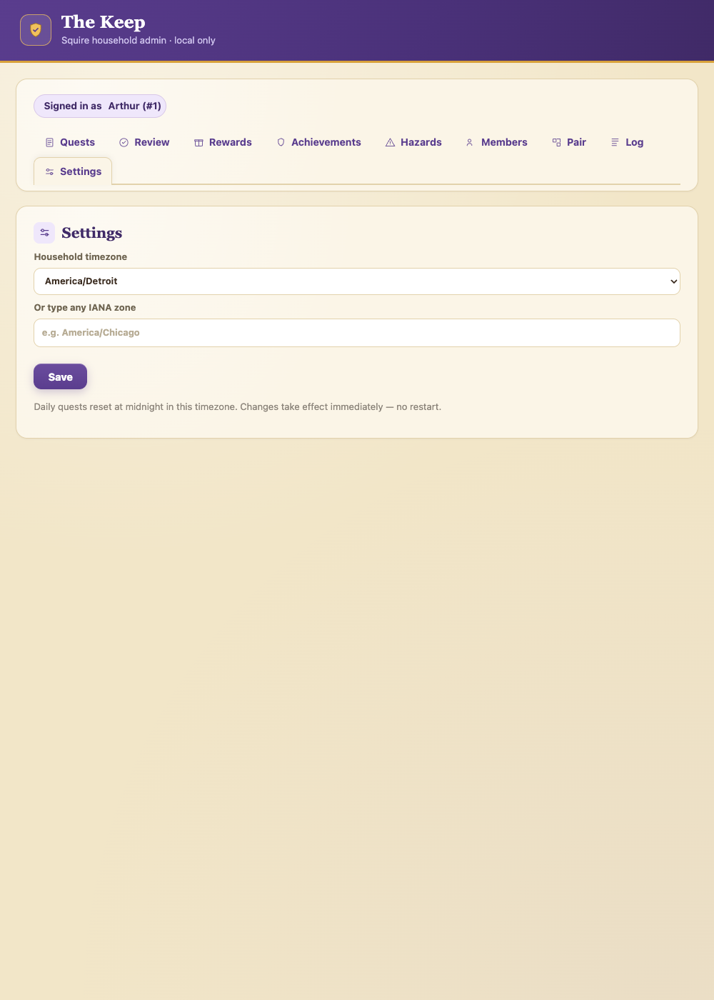
Example
SQUIRE_DATA_DIR=/var/lib/squire \
SQUIRE_HOUSEHOLD=ourhouse \
API_PORT=8080 KEEP_PORT=4920 \
SQUIRE_ADMIN_NAME="Mom" SQUIRE_ADMIN_SECRET="…" \
squire-serve
Some variables (
SQUIRE_MDNS=off,SQUIRE_PAIR_HOST) matter mainly for the planned internet-mode deployment.
Glossary
The Keep
The parent admin web app that runs on the home computer. It holds the Rust engine, the store, and
the Local API, and is the single source of truth and the only writer. Parents author quests,
rewards, and achievements here and review the queue. Reachable at http://localhost:4920 on the
host.
The Squire
The phone app in player mode, used by a child. Shows today’s quests, balance, streaks, and rewards; submits completion claims and redemption requests. It can read and propose but never commit, and it works offline.
The Knight
The same phone app in parent quick-admin mode. Approve/reject claims, mark a quest done, redeem a reward, add funds — from anywhere. Authenticated with a parent credential the Squire app never holds. Authoring stays keyboard-first in the Keep.
Home server (squire-serve)
The persistent binary that serves the Keep and the Local API and stores all household data on your machine. See Run the home server.
Quest
A chore. Has an assignee, a cadence (one-off / Daily / Weekly / Every N days), a reward, and an optional auto-approve. Completing one creates a claim.
Claim
A child’s “I did it” submission against a quest. Enters the review queue (unless the quest auto-approves); on approval the reward is paid and the value is snapshotted.
Reward
Something a child spends a balance on. Has a cost, an availability (Once / Repeatable), and an optional achievement gate. Spending one creates a redemption request.
Redemption request
A child’s “I want that” against a reward (including cash-out). Affordability is checked only at approval; nothing is reserved while it’s pending.
Achievement
A sticky reward for consistency — streaks, totals, or point milestones. Can award bonus points and unlock gated rewards.
Hazard
A negative behavior that deducts coins or progress — consequences alongside rewards.
Currency
Squire tracks balances in more than one currency: coins (an in-app score) and dollars (real money). Quests can pay either or both; dollars are settled via cash-out.
Adjustment
A direct, parent-only change to a balance. Requires a reason, which is recorded in the log.
Pairing
The one-time flow that links a phone to a household member and gives it that member’s role, via a QR-encoded one-time code. See Pair a phone.
Event log
The append-only record of everything that happened. Balances, streaks, and due-lists are derived from it, never stored as mutable counters — so every number is explainable by replay. See How Squire works.
How Squire works
Squire is built so that a child can act freely — even offline — while only the parent’s computer can ever move a balance. This isn’t enforced by hiding buttons; it’s true by construction. This page explains the design behind that promise.
One writer, many clients
The system is a set of cooperating clients around a single-writer core, separated by an authenticated trust boundary:
- The Keep (home computer) holds the engine and the store. It is the only component that writes. Every state change goes through one engine “door” that validates and commits.
- The Squire (child phone) and the Knight (parent phone) are clients. They read state and submit proposals. Neither writes the store directly.
The child’s network surface offers only read + propose. There is no “approve” or “mint” call available to the Squire role at all — so the child app is provably incapable of granting itself points, regardless of what’s tapped on the phone.
The review loop
Child (Squire) Queue Parent (Knight / Keep)
"I did it" ──────▶ claim ──────▶ approve / reject
│
▼
Keep commits the reward
(value snapshotted)
- The child submits a claim (chore done) or a redemption request (wants a reward).
- It lands in a single batched review queue.
- A parent approves or rejects — from the Knight on their phone or from the Keep.
- The Keep performs the write. Quests marked auto-approve skip the queue entirely, keeping daily parent effort to seconds.
Privileged parent actions (approve, redeem, add funds) ride a per-user, tenant-scoped token the child never has. The integrity model rests on that token plus single-writer commit — not on secrecy.
Everything is derived from an event log
Squire never stores a balance as a number it edits. Instead it keeps an append-only event log
(approvals +, redemptions −, bonuses +, adjustments ±) and derives every balance, streak,
due-list, and unlock by replaying it.
This has real consequences for families:
-
Explainable. Any balance or streak can be justified by replaying the events behind it — open the Log tab and see exactly how a number happened.
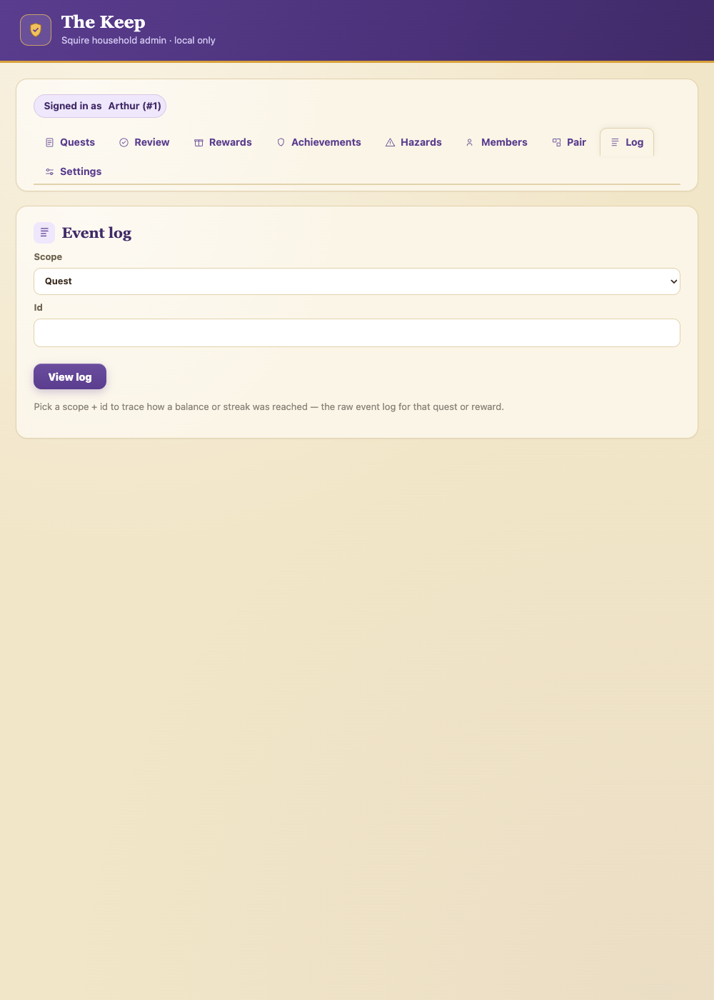
-
History never silently changes. Reward values are snapshotted at approval, so editing a quest’s payout later doesn’t rewrite points already earned.
-
Archiving ≠ deleting. Archiving a quest or reward hides it going forward while its history stays valid.
-
Restores are exact. Re-importing the log reconstructs identical balances and streaks — which is why backup & restore is trustworthy.
Offline by design
Each phone caches the last state it saw and renders from that cache when the home computer is unreachable. Claims, requests, and parent quick-actions queue in a local outbox and flush idempotently (client-minted ids) when the device reconnects. The two devices never need to be online at the same time: a child can finish a chore offline, and it appears in the parent’s queue on the next sync.
Where the data lives
On your machine. The home server keeps everything in its data directory; there is no Squire cloud in the loop. The optional internet exposure still routes to your own home server — it changes how phones reach it, not where the data lives.
Delivery & updates
Squire isn’t on an app store and has no update server you log into. Instead it uses a simple, auditable delivery model: source stays private, signed artifacts are published to a public repository, and your home server pulls from there. This page explains how a new version reaches your phones.
Two repositories
| Repo | Visibility | Holds |
|---|---|---|
colliery-io/squire-core | private | the source code (engine, apps, this documentation) |
colliery-io/squire | public | only signed release artifacts: the phone APK, server binaries, the installer, and this site |
Keeping artifacts in a separate public repo means home servers and the install QR can fetch them unauthenticated, while the source stays private.
How an update flows
build + sign (CI)
squire-core ───────────────────────▶ GitHub Release on colliery-io/squire
(private) │
│ pull (no auth)
▼
your home server (squire-serve)
│ serve over LAN
▼
phones update in place
- A release is cut from the private repo; CI builds and signs the phone APK and server
binaries and publishes them to a Release on the public
colliery-io/squire. - Your home server checks that public repo on a schedule and on startup:
- it self-updates its own binary, and
- it pulls the latest phone APK into its updates directory.
- Phones update over your LAN from the home server — no Play Store, no reinstall. Detection is by content hash, so a phone only downloads when the bytes actually change.
What this means for you
- You don’t sideload updates repeatedly. Install the app once; the server hands out new versions over Wi‑Fi and the app updates itself.
- Signing is stable. Updates are signed with a consistent key, so installed phones keep accepting them (and macOS keeps its Local Network permission across server updates).
- You can pin or disable it.
SQUIRE_SELF_UPDATE=offandSQUIRE_APK_SYNC=offturn the automatic behavior off;SQUIRE_DIST_REPOpoints at a different release repo. See configuration.
Why it’s built this way
This is the delivery model recorded in the project’s architecture decisions (source private, artifacts public, server-pull + LAN distribution + self-update). It keeps the trust boundary intact — the same single-writer home server that owns your data is the only thing that distributes code to your phones.